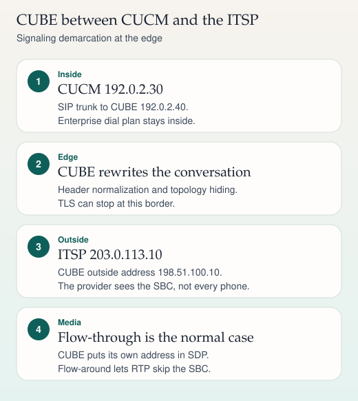
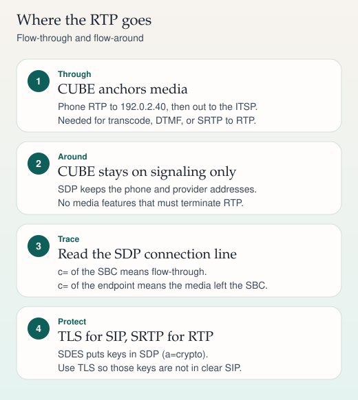

Cisco IOS XE border element
CUBE
CUBE is a B2BUA. The inside dial-peer and the outside dial-peer are two legs, and each has its own offer.
- INVITE — Incoming match: URI, then other inbound criteria. Dial-peer 0 means nothing you wrote matched.
- INVITE — Outgoing match is destination-pattern, longest match, then lowest preference.
- 200 + SDP — The carrier answer is not automatically the SDP CUCM sees.
- 200 + SDP — Early-offer or delayed-offer is a property of this leg's dial-peer and SIP profile.
OPTIONS keepalive can busy-out a server-group target. Cause 188 on a server-group usually means the target was busied out, not that the CSS missed.
Sources
Study card carried forward
Border
SBC and CUBE
CUBE is the usual Cisco border between a call manager and a provider. These two cards cover the topology, header normalization, where RTP flows, and what TLS plus SRTP actually protect.

On a phone, swipe a wide ladder sideways. The steps below repeat the same sequence.

On a phone, swipe a wide ladder sideways. The steps below repeat the same sequence.
Why the border exists
Cisco Unified Border Element (CUBE) is an IOS SBC. In the usual enterprise trunk it sits between CUCM and an internet telephony service provider. CUCM speaks SIP to 192.0.2.40. The provider speaks SIP to 198.51.100.10. Phones and directory numbers stay on the inside. The provider does not need a route to every phone.
The border is where you hide topology, normalize headers the peer does not understand, interwork DTMF, and decide whether media is anchored. It is also a trust boundary: signaling and media encryption can start or stop here.
SIP normalization
Normalization means changing the SIP so the next hop will accept it, without changing the meaning of the call. On CUBE that is usually a SIP profile applied to a dial-peer. Typical, still generic, jobs:
- Add, strip, or rewrite a header the peer rejects. A single unsupported header is enough for some providers to answer 400.
- Map identity. Inside the enterprise you may see
P-Asserted-Identity(RFC 3325). The provider may want that identity in a different header, or may require a name and number format you do not use internally. - Pass through, or consume, mid-call signaling such as UPDATE and re-INVITE. Consuming it without understanding it is how hold and resume break at the border.
- Force early offer when the provider refuses an INVITE that has no SDP. Delayed offer (SDP in the 200 OK, answer in the ACK) is legal SIP and a frequent interop fault.
Keep a before-and-after trace of one call. If you cannot point at the header you changed, the profile is folklore.
Flow-through and flow-around
| Flow-through | Flow-around | |
|---|---|---|
| Signaling | Terminates on CUBE and is reoriginated. | Still terminates on CUBE. |
| RTP | Anchored. CUBE writes its own address and port into SDP. | Between the endpoints. SDP keeps their addresses. |
| Use it when | You transcode, interwork DTMF in media, record on the SBC, or convert SRTP to RTP. | You only need a signaling border and both sides already agree on media. |
| Default on CUBE | Yes. Flow-through is the normal behavior. | Configured, for example with media flow-around. Confirm the command for your IOS-XE release. |
If the SDP you capture on the outside leg shows c=IN IP4 198.51.100.10, media is on the SBC. If it shows the phone's address, media is not on the SBC. Flow-around cannot do a job that requires CUBE to be in the RTP path.
TLS and SRTP
- SIP over UDP or TCP conventionally uses port 5060. SIP over TLS conventionally uses port 5061. The RTP ports are whatever the SDP negotiates inside the range you configured.
- A
sips:URI means TLS on each hop (RFC 3261). Many trunks instead keep asip:URI and turn on TLS at the dial-peer. Those are not the same promise. A single clear hop anywhere in asips:path is a failure. Asip:URI with one TLS hop says nothing about the next hop. - SRTP (RFC 3711) encrypts RTP. With SDES (RFC 4568) the key is in SDP as
a=crypto, and the media protocol token isRTP/SAVP. TLS on the signaling is what stops that key from traveling in clear text. - CUBE can speak SRTP on one leg and RTP on the other. That conversion requires flow-through. It is a deliberate security decision: the inside leg may be trusted while the outside leg is not, or the reverse. Write down which leg is clear.
Sources
- Cisco IOS CUBE configuration guides: SIP trunking, media flow-around, SIP profiles, TLS, and SRTP
- RFC 3261 (sips and SIP transport)
- RFC 3325, private extensions for asserted identity
- RFC 3711, SRTP, and RFC 4568, SDES keying in SDP